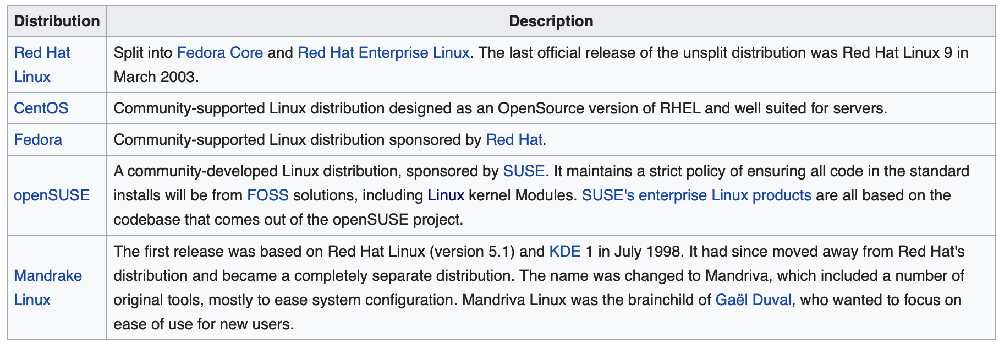
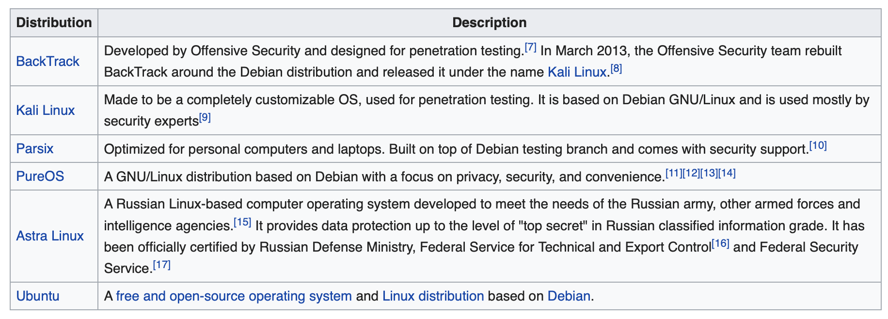

1. What is Linux?
Linux is a family of open source Unix-like operating systems based on the Linux kernel,
an operating system kernel first released on September 17, 1991, by Linus Torvalds. Linux is typically packaged
in a Linux distribution.
For the purposes of this page, we use the term “Linux” to refer to the Linux kernel, but also the set of programs, tools, and services that are typically bundled together with the Linux kernel to provide all of the necessary components of a fully functional operating system. Some people, particularly members of the Free Software Foundation, refer to this collection as GNU/Linux, because many of the tools included are GNU components. However, not all Linux installations use GNU components as a part of their operating system. Android, for example, uses a Linux kernel but relies very little on GNU tools.

2. Origin of Linux
Who “owns” Linux?
By virtue of its open source licensing, Linux is freely available to anyone. However, the trademark on the name “Linux” rests with its creator, Linus Torvalds. The source code for Linux is under copyright by its many individual authors, and licensed under the GPLv2 license. Because Linux has such a large number of contributors from across multiple decades of development, contacting each individual author and getting them to agree to a new license is virtually impossible, so that Linux remaining licensed under the GPLv2 in perpetuity is all but assured.
How was Linux created?
Linux was created in 1991 by Linus Torvalds, a then-student at the University of Helsinki. Torvalds built Linux as a free and open source alternative to Minix, another Unix clone that was predominantly used in academic settings. He originally intended to name it “Freax,” but the administrator of the server Torvalds used to distribute the original code named his directory “Linux” after a combination of Torvalds’ first name and the word Unix, and the name stuck.
Types of Linux
1. RPM Based
Red Hat Linux and SUSE Linux were the original major distributions that used the .rpm file format, which is today used in several package management systems. Both of these were later divided into commercial and community-supported distributions. Red Hat Linux was divided into a community-supported but Red Hat-sponsored distribution named Fedora, and a commercially supported distribution called Red Hat Enterprise Linux, whereas SUSE was divided into openSUSE and SUSE Linux Enterprise

2. Debian Based
Debian is a distribution that emphasizes free software. It supports many hardware platforms. Debian and distributions based on it use the .deb package format and the dpkg package manager and its frontends (such as apt-get or synaptic).
